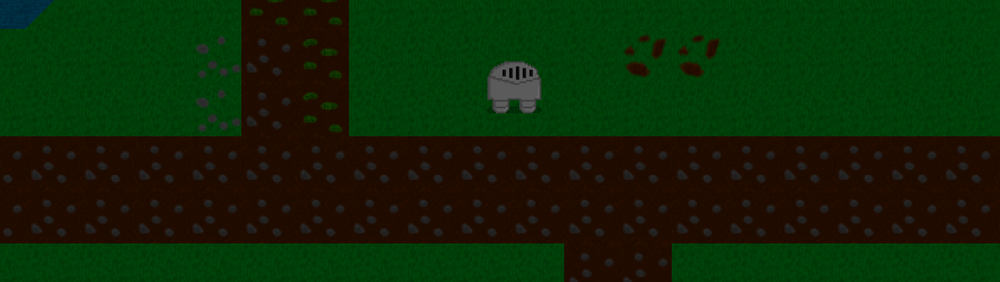
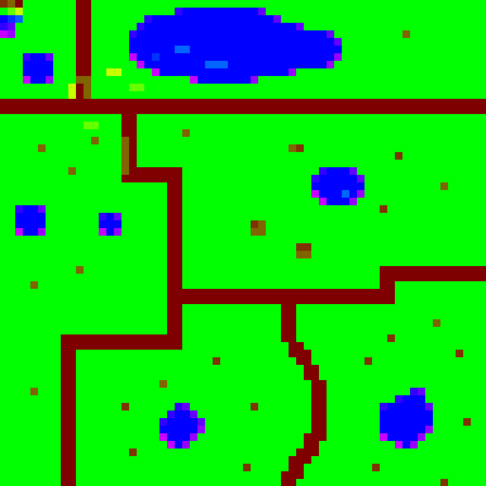

Summer 2020 Project
A simple SDL game I made in the summer of 2020 which has no objectives but was used to experiment with SDL. The levels are generated by taking the pixel colour of each pixel from the map's PNG file and converting it into a bitmap. If the pixel colour matched the requirements for a tile that tile would be placed in the corresponding place in the game.
By also learning from an online tutorial it helped me create an Entity Component System which helped with moving the sprites around with the camera and adding properties like collision to the water tiles. The camera edge collision was done by creating a rectangle the size of the viewport, the rectangle would detect when it has gone outside the specifed boundaries and stop the camera at the edge of the screen.
The pause and options menu was the first time I had tried creating my own user interface and I added basic mouse support by creating a mouse collision function that detected when the mouse was over a highlighted option. In the case that I do something like this again I would improve how the map tiles are handled as in the current system you can only have so many textures per level and level handling is not done in a very efficient or clean way.